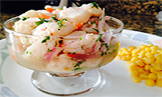

|  |
INGREDIENTES
pescado
3 cebollas medianas
8 a 10 limones
5 aji limo picados chiquitos
culantro picado
3 hojas de lechuga
papa
3 camotes
pimienta
sal |
preparacion:
esexprimir los 12 limones para extraer su jugo, resérvalo para más adelante. Luego,corta el pescado en trozos de 3 centímetros, aproximadamente. Coloca los trozos enel recipiente que vayas a utilizar para servir el plato
. Coloca los trozos en el recipiente que vayas a utilizar para servir el plato.2.Mezcla el pescado con el ají amarillo picado, el caldo de pescado y el cilantro. Coloca tambiénla cebolla cortada en julianas y el ajo machacado.Déjalo reposar unos minutospara que se marine bien e se impregne de todos los sabores
.Sal pimienta al gusto y coloca a un lado del plato el camote sancochado, la lechuga |